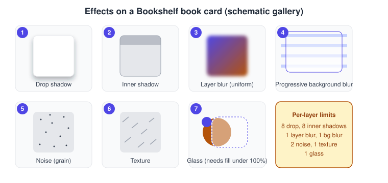
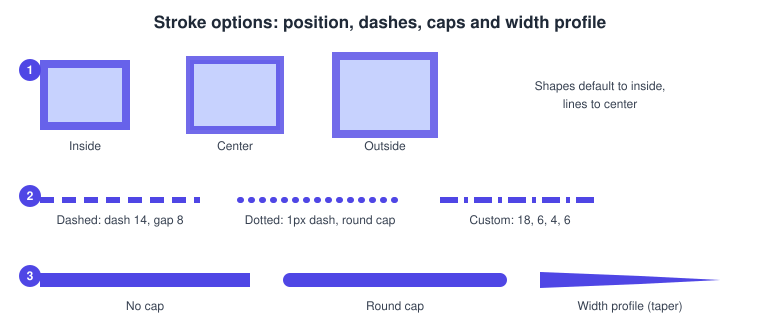
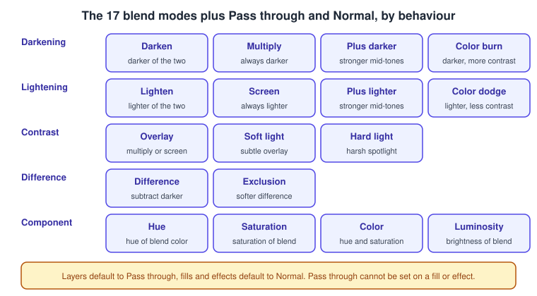
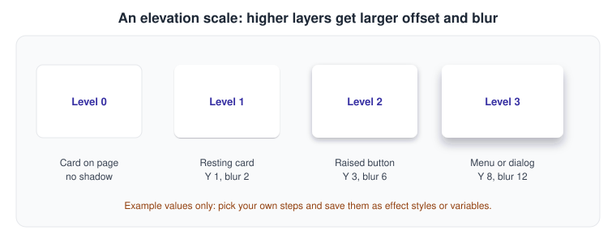

Strokes, Effects and Blend Modes
|
This content was generated with the assistance of AI and should be verified against the official documentation before being relied on in production. |
This page was written on 2026-10-30 against the UI3 interface of Figma Design. The strokes, effects and blend modes articles of Figma Learn list them as available on all plans and require edit access to the file, so a Full seat (or a Collab seat on a file where the person can edit) is needed to change them; people who can only view a file see the same values in the right sidebar and Dev Mode. The effects described here are generally available; the Figma Learn effects article does not mark any of them as beta. Glass is not supported in SVG export or in Figma Sites, which is itself in beta. Seat names are explained on Plans, Seats and AI Credits.
The running example is the Bookshelf mobile app. A book card gets a hairline stroke, the "Add to shelf" button gets a soft shadow, the bottom tab bar gets a blurred glass background and the catalogue header fades into the content with a progressive blur. Fills and gradients are covered on Color, Fills and Images, and the paths that strokes follow on Shapes, Vectors and the Pen Tool.
Where things live in UI3
Select a layer and look at the right sidebar, on the Design tab. The Appearance section holds the layer opacity and the layer blend mode (Pass through by default). The Stroke section holds the stroke colour, weight and position, and its advanced settings. The Effects section lists every effect on the layer, with a handle to reorder them and a control to add a new one. Fills and strokes have a colour picker where a blend mode can be applied to that single paint.

Strokes
A stroke is a line painted along the edge of a shape or along an open path. Its main settings are listed below.
| Setting | What it does |
|---|---|
Position |
Inside, center or outside the path. Shapes default to inside and lines to center. Brush and dynamic strokes support only center, and SVG export simplifies inside and outside strokes to center strokes. |
Weight |
The width in pixels. The stroke weight is not part of the layer’s dimensions. |
Individual sides |
For rectangles, frames, components and instances: All, Top, Bottom, Left, Right or Custom. Setting one side to 0 removes it, which is how a card gets only a bottom divider line. |
Dash and gap |
Dashed (dash length, gap length, cap), Dotted (a 1px dash with a Round cap and Center position) or Custom (comma-separated dash and gap values). Dashes begin and end with a half-length dash; use Outline stroke to edit that. |
End caps |
None, Round (the default), Square, Line arrow, Triangle arrow, Reverse triangle and Diamond arrow. The sidebar applies them to open paths with two endpoints; other endpoints need the advanced settings in vector edit mode. |
Joins and miter angle |
Miter, Bevel or Rounded. The miter angle is the threshold below which a miter join becomes a bevel. |
Width profile |
Tapers the ends and varies the thickness along the path, like a brush. It cannot be applied to branching vector networks or to dashed or dynamic strokes, and an arrowhead is lost when a profile is applied. |
Brush and dynamic stroke |
Brush styles and the Frequency, Wiggle and Smoothen controls of dynamic strokes; both support only the center position. They are the entry point to Figma Draw. |
Two practical consequences follow. Scaling a layer also scales its stroke, while resizing it keeps the stroke weight. And only colour can be saved as a style for a stroke: weight, position and the rest must be set by hand or reused by copying a layer. Pressing Enter on a selected path opens vector edit mode, where the per-point stroke settings are available.

Procedure: give the book card a hairline outline
-
Select the book card frame in the Layers list or on the canvas.
-
In the Stroke section of the right sidebar, click the add (plus) control.
-
Set the colour to a light grey and the weight to 1.
-
Leave the position on Inside, so the card keeps its outer size and a 1px stroke does not grow the layout.
-
Open the individual sides menu and choose Bottom to turn the outline into a single divider line.
Shadows
A drop shadow is painted behind the layer and suggests that it floats above the surface. An inner shadow is painted inside the layer’s bounds and suggests that it is pressed in; it is often used for depth on text and for recessed or pressed button states. Each layer can have up to eight drop shadows and up to eight inner shadows.
-
X and Y offset set the direction of the light. A positive Y puts the shadow below the layer.
-
Blur softens the edge and Spread grows or shrinks the shadow. Spread works only on rectangles, ellipses, frames and components, and frames and components also need Clip content on and a visible fill of at least 1% opacity.
-
The shadow colour and opacity are set in the Fill of the effect.
-
Show behind transparent areas (drop shadows only) lets the shadow show through transparent parts. The layer needs a fill under 100% opacity, a stroke without a fill, a non-Normal blend mode on a fill or stroke, or a centre or outside stroke under 100% opacity.
-
In Dev Mode a drop shadow maps to the CSS
box-shadowproperty, or totext-shadowfor text layers, so the values designed here are what a developer reads.
Blurs: layer, background and progressive
Layer blur blurs the layer itself, for example a placeholder cover while the real image loads. Background blur blurs whatever is behind the layer, which is what a frosted tab bar needs. Both come in two modes: Uniform applies the same blur everywhere, and Progressive lets the blur grow along a direction, with controls for the size, direction, intensity and the start and end points. Each object can have only one layer blur and one background blur; extra background blurs are ignored rather than multiplied.
Background blur is invisible when the fill is fully opaque, so the fill of the layer must have an opacity between 0.10% and 99.99%. Blurs can slow a large file, and background blur is typically the slowest effect to render, so effects can be switched off while editing.
Procedure: fade the catalogue header into the content
-
Draw a rectangle over the top of the catalogue screen, behind the title text.
-
Set its fill to a screen-background colour at about 60% opacity, so the blur is visible.
-
In the Effects section, add an effect and choose Background blur.
-
Switch the blur from Uniform to Progressive and drag the start and end points so that the blur is strongest at the top edge and zero where the first book card starts.
-
Reduce the size until the cards below remain legible.
Noise, texture and glass
Noise adds grain. It has a number of colours (Mono, Duo or Multi), a size on X and Y, a density and, depending on the mode, a colour or an opacity; a layer can have up to two noise effects. Texture adds a paper-like surface with a size on X and Y, a radius that controls how far the effect spreads past the boundary, and Clip to shape, which keeps it inside the layer; a layer can have one. Drop shadows interact with a clipped texture, producing a textured shadow.
Glass refracts and frosts what is behind a layer. Its settings are light angle, light intensity, refraction, depth, dispersion, frost (a background blur on the glass) and splay (how far the light spreads). The limits matter in practice: glass is invisible on an object whose fill is 100% opaque, background glass does not affect foreground glass, there are no environmental reflections, and it cannot be combined with background blur on the same object, in which case the first effect encountered is the one rendered. It is not supported in SVG export or Figma Sites. For the same idea as a platform design language, see Liquid Glass and the Design System.
Effects are reordered with the handles in the Effects section and the order affects rendering. A layer is drawn from the top as layer blur, noise and texture, then stroke paints, inner shadow, fill paints, drop shadow, and finally background blur or glass. A layer blur or an unclipped texture isolates the blend modes of the fills, strokes and drop shadows below it; to let a fill blend with the canvas, set the blend mode on the whole layer in Appearance instead.
To copy the settings of an effect, press Esc to leave the field and then Cmd C on macOS or Ctrl C on Windows, paste with Cmd V or Ctrl V, and duplicate an effect with Cmd D or Ctrl D. Effects can be saved with a style; see the Figma Learn article on creating styles.
Blend modes
A blend mode decides how a colour combines with what is below it. A blend mode can be set on a whole layer (Apply blend mode in the Appearance section), on a single fill or stroke (through its colour picker) or on a drop shadow, inner shadow or noise effect. Each layer, fill or effect has exactly one, and a fill that uses a colour style cannot have its own blend mode; apply it to the layer or to the style instead. Hovering over an option previews it on the canvas.
Layers default to Pass through, which has no effect by itself but lets the blend modes of fills, effects and child layers reach the content below; it cannot be set on a fill or effect. Fills and effects default to Normal, which shows colours unchanged and, on a layer or parent, stops blend modes inside it from reaching content below. The other seventeen modes fall into five behaviours.

-
Darkening: Darken, Multiply (always darker, white keeps the original), Plus darker and Color burn.
-
Lightening: Lighten, Screen (always lighter, black keeps the original), Plus lighter and Color dodge.
-
Contrast: Overlay, Soft light and Hard light.
-
Difference: Difference and Exclusion, where white inverts the base.
-
Component: Hue, Saturation, Color and Luminosity, useful for tinting a monochrome image.
The grouping names are descriptive only; Figma Learn does not group the modes. A common Bookshelf use is Multiply on a grey paper-texture layer above a cover image, or Color on a flat tint above a black-and-white author photo.
Opacity
Layer opacity is set in the Appearance section and fades the whole layer, including its strokes and effects. Fill opacity, set in each fill’s colour picker, fades only that paint. The distinction matters for effects: background blur and glass need a fill below 100%, while lowering the layer opacity fades everything. The keyboard shortcut for setting opacity with number keys is listed in the in-app shortcuts panel but was not part of the articles fetched for this page, so check the panel before using it in training material.
An elevation scale for Bookshelf
An elevation scale gives each layer of the interface a consistent shadow so that depth means the same thing everywhere: the larger the offset and blur, the higher the surface. The values below are an example, not a Figma rule. Define each level once as an effect style, so a change is made in one place.

Procedure: create the elevation styles
-
Select the "Add to shelf" button and add a drop shadow with X 0, Y 3, blur 6 and a dark colour at about 30% opacity.
-
With the layer still selected, open the style control of the Effects section and create a style named for the level, for example Elevation/2.
-
Repeat on a card (Y 1, blur 2) and on the filter menu (Y 8, blur 12), naming them Elevation/1 and Elevation/3.
-
Apply the styles to new layers instead of typing the numbers again.
Common mistakes
-
Adding background blur or glass to a layer whose fill is 100% opaque: nothing appears to happen.
-
Stacking glass and background blur on one object and wondering why only one renders.
-
Using an outside stroke and expecting the layout size to stay the same; prefer an inside stroke for cards.
-
Expecting an SVG export to keep inside or outside stroke positions or glass; see Exporting Assets.
-
Putting a blend mode on a fill that uses a colour style, or a layer blur above fills and expecting the fills to still blend with the canvas.
-
Animating shadows: Smart Animate supports texture, noise and both blurs, but not drop or inner shadows.
What older guides get wrong
Guides written before 2025 show the old interface (UI2, retired on 2025-04-30), with a top toolbar and a differently arranged properties panel. Many of them predate the noise, texture, progressive blur and glass effects, which are now part of the Effects section next to shadows and blurs. Shadow and blur settings in such guides still work, but the click paths do not match UI3, and any mention of "editor" and "viewer" seats was replaced by Full, Dev, Collab and View seats on 2025-03-11. Shadow values copied from an old file remain valid.
Source: Figma release notes